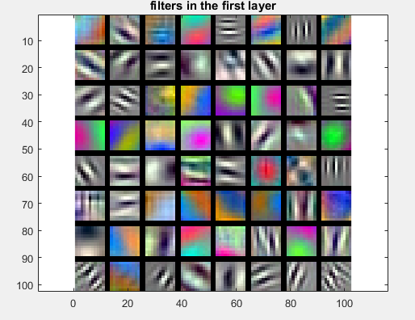
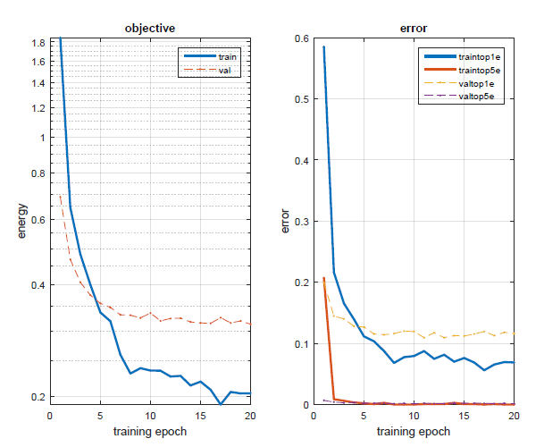
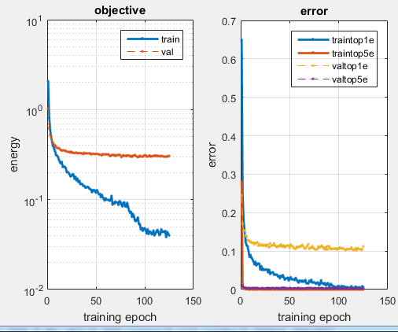

Convolution NN for Object Recognition
| Class | Instructor | Date | Language | Ta'ed | Code |
|---|---|---|---|---|---|
| CS 6476 Computer Vision | James Hays | Fall 2015 | MATLAB | No | Code N/A |
Visualization of weights into the first layer of Part 1 Net : They look like filters or edge detectors
The purpose of this project was to illustrate the benefits of using deep learning (specifically, a Convolutional Neural Net) for object recognition, in two parts, either building a net from scratch or modifying the fully-connected layers of a pre-trained net and using it as a "warm start" (retraining it on our training data).
Overview of CNNs
In a standard neural net, the inputs to the net, often called the feature vector, are composed of descriptive attributes of the data being classified. Often, each of these attribute values is connected to each of a number of "perceptrons" which make up the first layer of the network, and which in turn are each connected to each of the set of perceptrons in the next layer (if there are any) or the output vector. The connections between these various components are weights that are applied to each input or previous layer's output, while each of the perceptrons (or percepts) act as summing thresholds, where once the weighted sum of all its inputs surpasses some value, it "activates" and passes a signal along to the next layer or the output.
The training data is fed into the network, and the resultant output is evaluated against the known classification of the data to generate "error" or "loss". Then we differentiate this error with respect to the weights of every connection to see where changes in the weights will decrease the error (Back propagation). By iteratively repeating these forward passes to generate data and back propagation to update the weights, we "train" the network on a set of data, until the error we get in a forward pass is sufficiently low for our purposes.
One problem with this process, inherent in neural nets of a fully connected configuration, is that they don't scale well in the size of the input - given a net with the first layer having n perceptions, adding a single feature adds n more weights that require updating, a quadratic cost. With an input of very high dimensions, a fully connected neural network like I have described would take exceedingly long to train. A network configured to use an image as an input, where every pixel or even region of pixels, was quantized in some manner and fed as a feature into the net, therefore, would obviously be intractible unless the image was very small.
Enter Convolutional Neural Networks. Instead of having each piece of the input image feed every perceptron with its own weight, we apply the same weights to an image uniformly across every input pixel (similarly to the various filtering techniques we employed in earlier projects), and instead add layers, with different sets of weights for each, to provide variation in our input processing. Each layer of perceptrons within this first "convolutional layer" is fed by every pixel of the image along with the neighborhood around the pixel using the same weights as every other perceptron in the same layer. Now, with this configuration, adding a pixel to the image input (i.e. increasing the feature vector size by 1) doesn't add n weights (where n is the # of perceptrons in the first layer) but rather just increases the sizes of each of this set of input layers by 1. Another benefit of this configuration is that it takes advantage of the fact that whatever makes a characteristic important in an image is the same all over the image (stationarity). By applying the same "filter" (weights) to the entire image, the layer that set of weights is connected to is getting a coherent representation of the image, or the previous layer of data (for convolutional layers later in the net configuration.)
Part 1
To perform the first part of the project, I took the given net, which performed poorly, and consisted of a single convolutional layer, followed by a pooling layer (where the specified sized neighborhood of outputs from the previous layer are compared, the max is found and the neighborhood is then replaced by a single max value (like a funnel)) of large stride and a rectified linear layer (used to get rid of negative outputs from the previous layers), and added the following :
- Image Jitter (where ~50% of the images were replace by their Left->Right mirror versions)
- Image Zero-Centering (where the "average image" is subtracted from each image, so that the image data is centered at 0)
- Network Regularization (where parts of the network are "turned off" during training in an effort to fight overfitting - in effect making our training data set look bigger to the network by only exposing part of the network to the data at a time)
- Additional Convolution Layers (2)
- Increased the # of filters in initial layer from 10 to 16.
The net I used for part 1 was as follows (the layers I added were the 7x7 convolution layer, 2x2x2 max pool, 5x5 conv, 2x2x2 max pool, and the 50% dropout on the last stage before the fully connected layer) :
%Part 1 CNN
numFilters = 16;
net.layers = {} ;
net.layers{end+1} = struct('type', 'conv', ...
'weights', {{f*randn(9,9,1,numFilters, 'single'), zeros(1, numFilters, 'single')}}, ...
'stride', 1, 'pad', 0, 'name', 'conv1') ;
net.layers{end+1} = struct('type', 'pool', 'method', 'max', 'pool', [3 3], 'stride', 2, 'pad', 0) ;
net.layers{end+1} = struct('type', 'relu') ;
%additional set of layers
%dropout layer here
net.layers{end+1} = struct('type', 'conv', 'weights', {{f*randn(7,7,numFilters,numFilters, 'single'), zeros(1, numFilters, 'single')}}, ...
'stride', 1, 'pad', 0, 'name', 'conv1') ;
net.layers{end+1} = struct('type', 'pool', 'method', 'max', 'pool', [2 2], 'stride', 2, 'pad', 0) ;
net.layers{end+1} = struct('type', 'relu') ;
net.layers{end+1} = struct('type', 'conv', 'weights', {{f*randn(5,5,numFilters,numFilters, 'single'), zeros(1, numFilters, 'single')}}, ...
'stride', 1, 'pad', 0, 'name', 'conv1') ;
net.layers{end+1} = struct('type', 'pool', 'method', 'max', 'pool', [2 2], 'stride', 2, 'pad', 0) ;
net.layers{end+1} = struct('type', 'relu') ;
%dropout layer here
net.layers{end+1} = struct('type', 'dropout', 'rate',0.5) ;
net.layers{end+1} = struct('type', 'conv', 'weights', {{f*randn(3,3, numFilters,15, 'single'), zeros(1, 15, 'single')}}, ...
'stride', 1, 'pad', 0, 'name', 'fc1') ;
% Loss layer
net.layers{end+1} = struct('type', 'softmaxloss') ;
Results after 500 epochs with all optimizations in place.
On the last point, while increasing the number of "filters" to 16 increased the size of the net, and the complexity/training time, it still trained very quickly using the GPU implementation of the MatConvNet library - in fact, I didn't really notice that much of a difference in training/evaluation time. I hoped that with more filters greater detail would be exposed in training, but I found that this didn't seem to be the case - the visualizations of the set of 16 weight-sets/filters did not seem to have much more variability than having 10. The improvement in accuracy using this increased count of filters was only about 5%
I used a logarithmic mapping of the learning rate, so that early in the process the rate was larger, whereas later in the training process it was smaller, in an effort to avoid getting stuck in local minima early in the process, similar to the concept behind simulated annealing. I also took advantage of my GPU by compiling the MatConvNet code to support GPU computing.
The results I got for augmenting each of the necessary components of the network are as follows :
Results For Part 1
| Network Configuration | Performance (% error) |
| Base Network | 78% |
| Jittered Images 50% | 68.2% |
| Jitter + Zero Centering | 45.5% |
| Jitter + ZC + Dropout Regularization of 50% | 35.1% |
| Jitter + ZC + D.R. + Extra Layers | 43.1% |
Graduate Credit : Part 2
For Part 2, I took the previously trained VGG-F network, modified the output layers to appropriate match the 15 classes we have in our data (instead of the 1000 classes it was originally trained for) and added two dropout layers before each of the last two fully connected layers. The images were loaded into the program in the same manner as part 1, although they were larger and copied for all 3 channels (since the VGG-F net was trained on 3-channel images), and the jitter process I used was the same. Upon retraining the network on our data I was able to get an error rate of 10.2% after 10 epochs. Using the GPU compilation of the MatConvNet library I was able to train and test this network to a satisfactory level of accuracy in only about 2 minutes. It was pretty amazing that so little modifications were necessary to make a net trained on an entirely different set of data capable of quickly converging on our data set. The important, identifying features of images, at least for this task of image classification, seem have a great deal of commonality, for this to be possible. The first layer filters didn't even change that much from back prop, at least that I could distinguish, despite that our images were black and white and not color like those images the network was originally trained on.
%Part 2 Modifications to VGG-F
f=1/100;
%hold onto net layer fc7
netLyrFC7 = net.layers{end-3};
netLyrRelu7 = net.layers{end-2};
%dropout7
net.layers{end-3} = struct('type', 'dropout', 'rate',0.5) ;
net.layers{end-2} = netLyrFC7;
net.layers{end-1} = netLyrRelu7;
%dropout8
net.layers{end} = struct('type', 'dropout', 'rate',0.5) ;
%fc8
net.layers{end+1} = struct('type', 'conv', ...
'weights', {{f*randn(1,1, 4096,15, 'single'), zeros(1, 15, 'single')}}, ...
'stride', 1, ...
'pad', 0, ...
'name', 'fc8') ;
% Loss layer
net.layers{end+1} = struct('type', 'softmaxloss') ;
Results of Part 2 - Pretrained CNN retrained on new images
| Part 2 Filters after training - don't look too different from the original filters. | After only a few epochs, and yet still only 10.2% error. | Results after long training. |
|  |  |  |